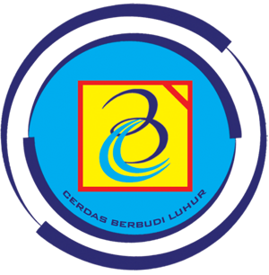

Quality Engineering
Redefined.
I don't just automate tests. I build testers.
Specializing in highly scalable CI/CD pipelines, resilient API testing, and parallel UI execution.
About Me
I am a Senior QA Automation Engineer and Lead Mentor. I build resilient testing infrastructure and empower the next generation of engineers.
With deep roots in QA automation and education, I’ve built testing pipelines, mentored dozens into automation roles, and led quality initiatives at massive organizations like Tokopedia, JULO, and Stickearn.
I recently completed my Master of Computer Science, leveraging time-series forecasting, DevOps tooling, and open-source infrastructure to drive data-backed quality decisions.
80+
QA Professionals Trained
95%
Manual to Auto Transition
5+
Years in Automation
Engineering Stack
Core Automation
DevOps & Infra
Languages
Perf & Sec
Experience & Mentorship
QA Lead
GigRadar.io
Leading strategic automation initiatives, performance resilience, and architecting quality gates for robust delivery.
Senior QA Automation
JULO
Architected automated API methodologies and transitioned the internal manual QA team into automation engineers.
Mentor & Instructor
OK-IT, Alterra Academy, Superprof
Trained over 80 professionals, instructing courses on Web, Mobile, and API automation workflows.
Test Engineer
Tokopedia & Stickearn
Executed large-scale QA operations and championed squad-wide test pipeline integrations.
Open Source Case Studies
Deep dive into my public reference implementations.
Parallel Grid Infrastructure
Dockerized Selenium Grid running parallel, thread-safe Python/Pytest UI tests via xdist Page Object Model.
View RepositoryPytest API Framework
Distraction-free playground for training SDETs on API assertions, requests library, and Pytest fixture injection with CI/CD.
View RepositoryQA Mentorship Assignments
Training modules designed as a Senior QA to transition manual testers into automation engineers using Python and Pytest.
View Pull RequestsEnterprise API Reporting
End-to-End API validation framework utilizing Allure reporting capabilities and GitHub Actions CI integrations.
View RepositoryContainerized UIAutomator
Containerized Android UI Automator Viewer streamed to an HTML5 canvas via noVNC/X11, removing Android Studio bloat.
View RepositoryPerformance & Security
Bridging QA gaps with JMeter load tests and OWASP ZAP baseline scans for full-stack resilience analysis.
View RepositoryAcademic Background

Master of Computer Science (M.CompSci)
Universitas Budi Luhur
2023 – 2025Specialization in Machine Learning and Time-Series Forecasting.
Bachelor of Computer Science (B.CompSci)
Universitas Tarumanagara
2018 – 2022Core foundations in Software Engineering and Algorithms.